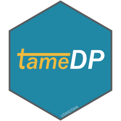

Changelog
tameDP 6.1
- Resolve bug creating OVC_HIVSTAT_D (was coming out OVC_SERV_D)) and remove associated age from OVC_HIVSTAT [2024-02-27]
- Remove prior year OVC_STAT & TB_STAT (N) due to disagg aggregation and incomplete disaggs [2024-02-26]
- Add error handing if valid tab is chosen in
typeparam fortame_dpbut not found in TST file [2024-02-22] - Convert stop errors from
stopto usecli::cli_abort[2024-02-22] - Resolve
acrossbug of “Usingacross()without supplying.colswas deprecated in dplyr 1.1.0”, which affected handing with PSNUxIM TST [2024-02] - Improve handling if the
typeparam intame_dpis kept to the default (“ALL”) but the file is a “PSNUxIM” TST [2024-02-22] - Update language in the Extracting Targets vignette retiring the use of PLHIV in favor of using SUBNAT introduced in v5.1 [2024-02-22]
- Resolve bug created when no OVC targets exist in the TST [2024-02-22]
- Resolve issue causing OVC_HIVSTAT_D not to be included in the dataset [2024-02-22]
- Improve code for ordering variables [2024-02-15]
- Include “<02 Months” and “02 - 12 Months” from PMTCT_EID to
trendscoarse[2024-02-15] - Add
target_age_2024andtarget_modality_2024for alignment with MSD [2024-02-15] - Clean up README and Vignettes [2024-02-14]
tameDP 6.0
- Add in
trendscoarseto exported dataset [2024-01-19] - Calculated OVC_HIVSTAT_D, PMTCT_STAT_POS, and PMTCT_ART_D targets [2024-01-19]
- Adjust standardizeddisaggregate mapping (
mer_disagg_mapping) for HTS_INDEX, OVC_HIVSTAT, PrEP_NEW (KP), and TB_STAT [2024-01-19] - Cover page now uses FY instead of COP, so updated
grab_infoto handle either [2024-01-16] - Update documentation to reflect COP24 [2024-01-16]
- Archive COP23 version under branch
archive_cop23[2024-01-05]
tameDP 5.1
- Change instructions to install from rOpenSci [2024-01-04]
- Remove prior year’s HTS targets, which are only coming from the TB modality [2023-03-29]
- Break out the OVC Program Status Care Giver (18+) [2023-03-17]
- Add additional disagg for PrEP_CT’s Test Results [2023-03-17]
- Update mapping tab,
mer_disagg_mappingto adopt some of the new disagg naming conventions changing in FY24 based onpepfar-datim/datapackroutput [2023-03-17] - Create
tame_subnatto replacetame_plhiv(soft deprecated) [2023-03-17]
tameDP 5.0.0
- Include a the file name (
source_name) and process date/time (source_processed) in the dataset output [2023-03-02] - Transform
PrEP_CT.TestResultinto an HTS testing modality inconvert_mods[2023-03-02] - Limit modalities to match new targeted modalities [2023-03-02]
- Update stored country list [
ou_ctry_mapping] with FY23 countries [2023-03-02] - Updated standardizeddisaggregate mapping table (
mer_disagg_mapping) to match FY23 targets [2023-03-02] - Make the otherdisaggregate parsing dynamic, rather that explicit [2023-03-02]
- Adjust HTS.Index to HTS_Index to match other indicators [2023-03-02]
- Correctly adjust year for Year 2 targets [2023-03-01]
- Remove references to SNU1, which is no longer included as a column in the Prioritization tab of the Target Setting Tool [2023-03-01]
- Align tameDP to work for new, COP23 Target Setting Tools [2023-03-01]
tameDP 4.0.4
- Add package check from
gagglr[2022-08-15] - Align column names with the new names in the MSD as of FY22Q2 [2022-05-16]
tameDP 4.0.3
- Addressed bug with OVC that duplicated rows due to m:m join with
mer_disagg_mapping[2022-04-20] - Add handling if prioritization tab is missing so
tame_dpwill work with OPU Data Packs which do not include this tab [2022-04-20] - Resolves bug with reference to mech_code in
get_nameswhen mech_code may not exist [2022-04-12] - Calculate deduplication (00000) mechanism rather than importing values from PSNUxIM tab [2022-03-23]
- Add regional operatingunit as country names,
ou_ctry_mapping, to resolve issue with Jamaica [2022-03-21; 2022-03-30] - Replaces old code for
get_namesto utilizegophr::rename_officialgiven size complexities introduced in the past few quarters. [2022-03-15] - Adds [
gophr][https://usaid-oha-si.github.io/gophr/] and [glamr][https://usaid-oha-si.github.io/glamr/] to the package dependencies [2022-03-15] for use ofgophr::rename_official. [2022-03-15] - Pulls SNU1 column from Prioritization tab to apply to data frame if using PSNUxIM, which does not have a SNU1 column included in the tab. [2022-03-15]
tameDP 4.0.2
- Resolve incorrect disaggregation for TX_PREV, HTS_TST, and HTS_TST_POS [2022-03-10]
- Include historic MER results and targets in the output dataset [2022-02-23]
- Merge prioritizations onto target dataframe [2022-02-23]
tameDP 4.0.1
- Ensure data types are correct prior to disaggregate binding in
map_disaggs. - Add vignette on combining with the MSD
- Allow
tame_dpto read in specific tabs instead of the preset “types”.
tameDP 4.0.0
- Add vignettes to the package.
- Add
ou_ctry_mappingto align countries to their Operating Units. - Update
tame_dpto work with COP22 Data Packs. - Allow
tame_dpto read in targets from all sheets or PSNUxIM tab. - Consolidate SUBNAT/PLHIV extract into
tame_dpinstead of separate function. - Applied new logic for
split_psnuintroduced by errors with OPU generation - Aligned exact DATIM target disaggregation with Data Pack data through
map_disaggs. - Build site and improve documentation.